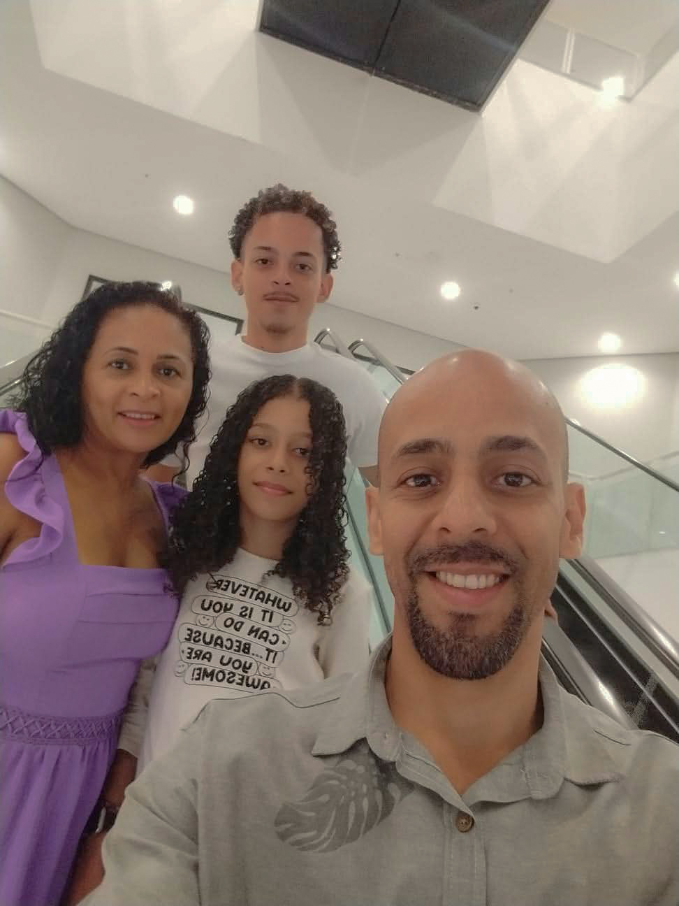
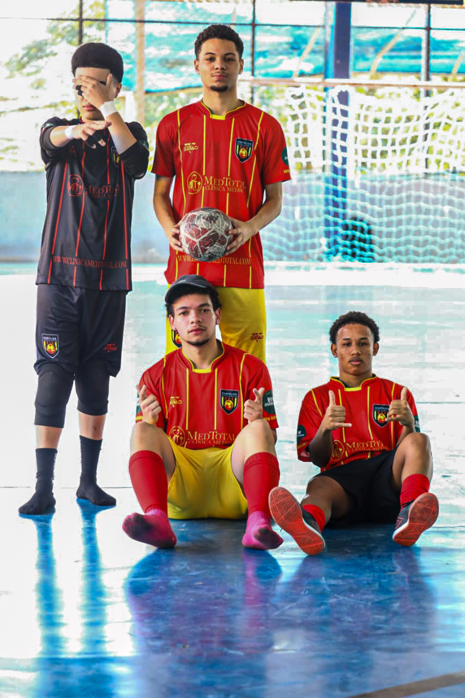

O futebol deixa muita coisa boa na vida da gente, mas ele nunca começa sozinho. Sempre existe alguém que coloca a bola no nosso pé, seja a família, seja um amigo.
E daí, o futebol traz frutos, que podem ser eternos.

Dedico este projeto à minha família, pois todos tiveram participação na construção deste tema.
Foi a minha mãe quem me apresentou o futebol, em um dia em que a seleção jogava. Pouco depois, ela me matriculou na minha primeira escolinha, onde descobri o esporte que tanto amo.
Meu pai foi a primeira pessoa a me levar a um estádio profissional, o do Corinthians.
E minha irmã é o motivo de eu levantar todos os dias, de começar e de terminar este projeto. Eu batalho por ela. Na verdade, por todos eles.
O futebol traz muitos frutos, e os que ele me deu foram os meus irmãos, os meus melhores amigos: Leonardo, Marcelo, Guilherme e Davi.
Juntos, formamos o time em que eu jogo, os Chapolins. É o time criado por um amigo com o intuito de enfrentar outros times apenas para se divertir nos fins de semana.
Mas, dentro dele, o nosso quinteto é o time titular inteiro, conhecido como “os 5 animais”.
